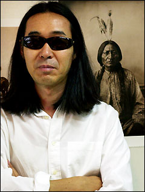

시
- 화양연화
- 눈위에 쓰는 시
생애

류시화는 시인이자 번역가로 1958년 충청북도 옥천에서 태어났다. 본명은 안재찬이다.
대광고등학교 졸업 후 경희대학교 국어국문학과에 문예장학생으로 입학하고
1980년 <아침>이라는 시로 《한국일보》 신춘문예에 등단했다.
1980년-1982년까지 박덕규, 이문재, 하재봉 등과 함께 《시운동》 동인으로 활동했다.
이 기간에 《시운동》에서 50여 편의 시를 발표하다가 '시인은 전쟁이 나도 다락방에서
사랑의 시를 쓸 수 있어야 한다'는 말과 함께 1983년에 활동을 중단한다. 이 후 그는 안재찬이라는 본명을
버리고 류시화라는 이름을 사용하며 명상서적 번역 작업을 시작한다.
또한 1988년부터 미국과 인도 등지의
명상센터에서 생활하고 인도여행을 통해 명상가를 자처하기 시작, 인도 대표 명상가인 라즈니쉬의 주요서적들을
번역한다.
그는 1년에 약 100권의 명상서적을 원서로 읽는 독서광이라고 전해지며, 16년 동안 겨울이 오면
인도를 방문하는 여행가이다.
1991년 첫 시집 《그대가 있어도 나는 그대가 그립다》를,
1996년 두 번째 시집 《외눈박이 물고기의 사랑》을 펴냈다.
2012년 세 번째 시집 《나의 상처는 돌 너의 상처는 꽃》을 출간했다.